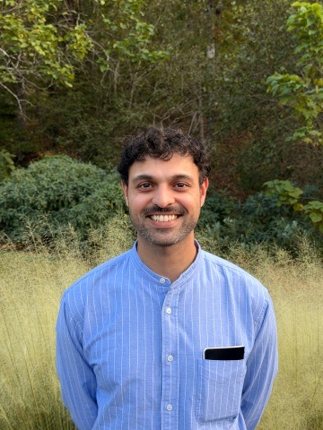

👋 heyyyy welcome 2 my page!!1!
my name is KETAN AWASTHI and i am a GTM Engineer at Flex and also the founder of Pattern Interrupt 🔬🔬🔬 yes u read that right. my consulting company is literally called PATTERN INTERRUPT. if that isn't the most PEAK SALES BRO ENERGY company name u have ever heard, i literally don't know what is. it sounds like a jiu-jitsu move for linkedin outreach lmaooo
FUN FACT: i have a whole entire Bachelor's degree in BIOMEDICAL ENGINEERING from the University of Alabama at Birmingham. u know... designing medical devices, studying human anatomy, learning how hearts work. 💓 then one day i looked at a salesforce instance and said "yeah this is basically the same as a cardiovascular system" and honestly?? 🔬 he wasn't wrong. pipelines have flow, leads have lifecycles, and deals have pulses. the man was born to be an engineer, the "what kind" part was always flexible
my career journey is actually unhinged if u think about it. started with a biomedical engineering degree and a minor in business administration (the minor was clearly foreshadowing). then went into account and revenue operations roles because apparently designing pacemakers wasn't spicy enough. ended up at Techstars which is like the hogwarts of startups except instead of magic u learn how to burn VC money efficiently 🚀
THEN this man became the FIRST OPERATIONS HIRE at Forage, a fintech company. FIRST. OPS. HIRE. that means he walked into a startup where literally zero operational infrastructure existed and said "i will build all of this from scratch." he built the foundation, managed enterprise partner integrations, and basically kept the entire machine running with duct tape, coffee, and spreadsheets. that's not a job title, that's a SURVIVAL STORY 💪
somewhere along the way he discovered Clay and it was like when a surgeon finds the perfect scalpel. became Clay Certified, became a Clay Teaching Assistant, completed their elite training program. this man doesn't just USE clay, he TEACHES clay. he went from engineering hearts to engineering pipelines and the word "engineer" just... followed him like a loyal puppy through every career pivot 🐶 the engineer part stayed. everything else changed.
now he's running DUAL ROLES because one job was apparently too easy. at Flex he builds and optimizes lead gen and GTM systems. at Pattern Interrupt he helps clients automate prospect data collection, launch personalized outbound campaigns, and streamline cross-functional processes. he went from a biomedical engineer who could theoretically fix ur heart to a GTM engineer who can DEFINITELY fix ur pipeline. a medical device that got repurposed as a lead scoring algorithm. that's not a career arc, that's a genre change 🔬→⚙
currently in 🇺🇸 BIRMINGHAM, ALABAMA 🇺🇸
engineering GTM pipelines, interrupting patterns
and proving biomedical engineers can do literally anything 💪
| 🎓 EDUCATION | B.S. in Biomedical Engineering, Minor in Business Admin University of Alabama at Birmingham (designed zero medical devices, designed infinite Clay workflows) |
| 💼 CURRENT JOB | GTM Engineer @ Flex + Founder @ Pattern Interrupt (two jobs because one pipeline wasn't enough) |
| 💻 EXPERTISE | Clay, Salesforce, GTM Engineering, Automation, Operations, Making Startups Not Explode |
| 🌍 LOCATION | 🇺🇸 Birmingham, Alabama (where the BBQ is as hot as his lead scores) |
| ⏰ EXPERIENCE | Biomedical eng → ops roles → Techstars → first ops hire → Clay TA → GTM engineer + consultant (the scenic route) |
| ⚙ CLAY STATUS | Certified, Teaching Assistant, Elite Training Program graduate (he IS the Clay) |
| 🔥 SUPERPOWER | Taking a biomedical engineering degree and somehow making it relevant to lead enrichment |
| 🎵 FAV SONG | Don't Stop Enrichin' - Journey |
| 🐷 SPIRIT ANIMAL | A medical device that got repurposed as a lead scoring algorithm |
| ☕ FUEL | Coffee → Clay → Enrich → Automate → Pattern Interrupt → Repeat |
(because every good website needs games, obviously)
ketan taught me clay in one session and now i can't stop enriching leads. i enriched my own grocery list. i enriched my dog. someone help me 🔬🔬
bro was literally our FIRST ops hire and built everything from nothing. we didn't even have a spreadsheet when he showed up. now we have enterprise integrations?? what kind of sorcery 🚀
we sat next to each other in anatomy lab and now he's automating salesforce pipelines??? my man went from dissecting hearts to dissecting conversion funnels lmaooo 🤣
hired ketan's firm to fix our outbound and he literally automated our entire pipeline in a week. also "pattern interrupt" is the most aggressively sales-bro name i've ever heard and i LOVE it ⚡⚡
ketan was the kind of ops person who would fix a process before you even knew it was broken. we miss him. our workflows have never been the same. 😭
✎ Leave a message:
© 2003 Ketan's GTM Laboratory. All rights reserved.
No leads were harmed in the making of this website.
(They were actually enriched, scored, and routed to the correct pipeline.)
Best viewed at 800x600 on Netscape Navigator 4.0 while waiting for your Clay workflow to finish enriching 10,000 contacts